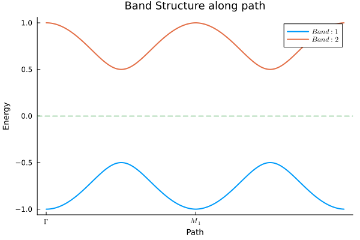
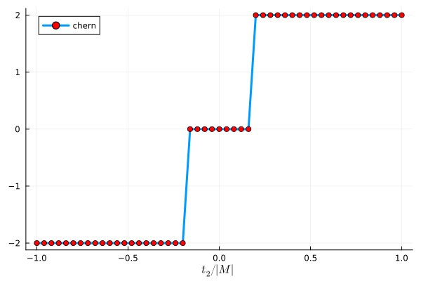

TightBindingTookit.jl
TightBindingToolkit.jl is a Julia package meant for constructing, and obtaining useful properties of generic tight-binding models. It supports any lattice structure, with any user-defined bonds on that lattice. It also has support for any spin of the particle hopping on the lattice.
Currently supported :
- Custom Unit Cell Construction. (v1.3) : now also supports construction in dimensions upto d=3. |
 | |Honeycomb Model with 1st, 2nd and 3rd neighbour hoppings.|
| |Honeycomb Model with 1st, 2nd and 3rd neighbour hoppings.| - Corresponding Brillouin Zone Construction. (v1.3) : now also supports construction in dimensions upto d=3.
- Hamiltonian, given a Unit Cell and a Brillouin Zone. (v1.3) : now also support BdG Hamiltonians.
- Diagonalizing the Hamiltonian in momentum space to get band structures and wavefunctions. |
 | |:–:| |Band structure for a triangular lattice with 1st, 2nd and 3rd neighbour hopping.|
| |:–:| |Band structure for a triangular lattice with 1st, 2nd and 3rd neighbour hopping.| - Density of State |
 | |:–:| |Density of state of graphene.|
| |:–:| |Density of state of graphene.| - Filling the model at given chemical potential, and calculating gaps. (v1.3) : also supported for BdG systems. || |:–:| |Band structure of the Kitaev Chain in 1-d.|
- Fermi surfaces of systems |
 | |:–:| |Fermi surface for a triangular lattice with 1st, 2nd and 3rd neighbour hopping.|
| |:–:| |Fermi surface for a triangular lattice with 1st, 2nd and 3rd neighbour hopping.| - Getting correlation functions. (v1.3) : also supported for BdG systems.
- Getting Berry curvature and Chern numbers. || |:–:| |Chern numbers in a spin-ful Haldane model as a function of t2.|
- Getting magnetic susceptibility in any direction, at any momentum, and energy. |
 | |:–:| |imaginary part of zero-energy susceptibility for a triangular lattice with 1st, 2nd and 3rd neighbour hopping.|
| |:–:| |imaginary part of zero-energy susceptibility for a triangular lattice with 1st, 2nd and 3rd neighbour hopping.|